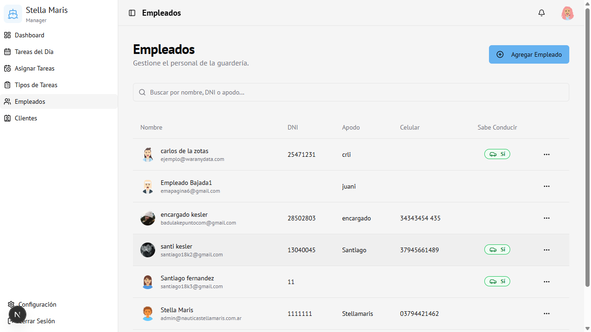
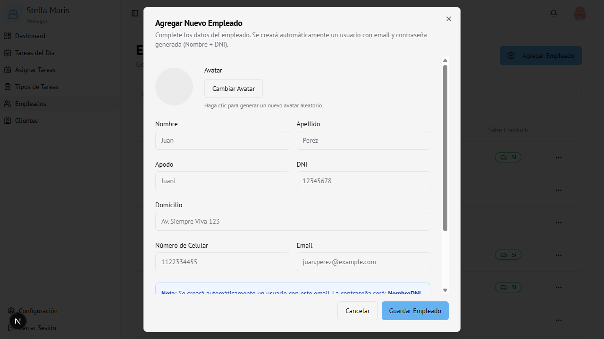

Módulo 05
Empleados
Gestión del personal de la guardería: altas, ediciones y subroles de acceso.
Vista general

La tabla incluye: Avatar generado automáticamente, Nombre completo y email, DNI, Apodo, Celular, e indicador de Sabe Conducir.
Agregar un empleado
- Hacer clic en Agregar Empleado (arriba a la derecha)
- Se abre el formulario

Campos del formulario
| Campo | Obligatorio | Descripción |
|---|---|---|
| Avatar | No | Clic en "Cambiar Avatar" para generar uno aleatorio |
| Nombre | Sí | Nombre del empleado |
| Apellido | Sí | Apellido del empleado |
| Apodo | No | Nombre corto usado internamente |
| DNI | Sí | Documento Nacional de Identidad |
| Domicilio | No | Dirección del empleado |
| Número de Celular | No | Teléfono de contacto |
| Sí | Se usa para crear el acceso al sistema | |
| Sabe Conducir | No | Marcar si puede operar vehículos |
| Subrol | Sí | Nivel de acceso: Empleado / Encargado / Admin |
Al guardar, el sistema crea automáticamente un usuario con el email ingresado.
La contraseña inicial es NombreDNI (ej:
La contraseña inicial es NombreDNI (ej:
Juan12345678). El empleado debe cambiarla desde Configuración.
- Hacer clic en Guardar Empleado
Editar un empleado
- Hacer clic en los tres puntos (···) de la fila
- Seleccionar Editar
- Modificar los datos
- Hacer clic en Guardar Empleado
Eliminar un empleado
- Hacer clic en los tres puntos (···)
- Seleccionar Eliminar
- Confirmar en el diálogo de alerta
Atención: Eliminar un empleado no elimina su usuario de acceso. Para revocar el acceso, cambiar el rol o contactar al administrador del sistema.
Buscar empleados
Usar el buscador para filtrar por nombre, DNI o apodo.
Subroles disponibles
| Subrol | Acceso |
|---|---|
| Empleado | Solo ve sus tareas y calendario |
| Encargado | Ve tareas del día (sin alta de clientes) |
| Admin | Acceso completo al sistema |
Acceso
Solo visible para Administrador.
Ruta:
Ruta:
/employees